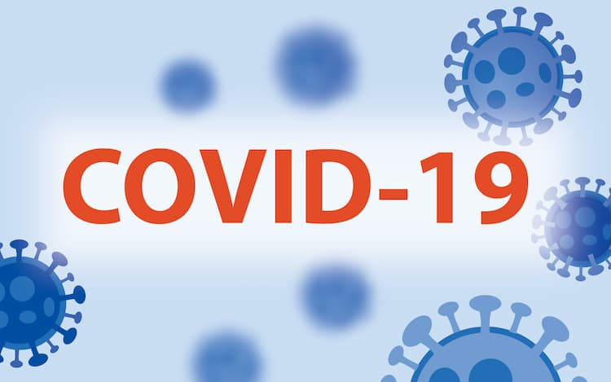

KORONA VIRUS - COVID 19 - HERCEG NOVI
Dostupni brojevi telefona za osobe sa respiratornim infekcijama u Herceg Novom

KORONAVIRUS : VAŽNI TELEFONI
CALL CENTAR INSTITUTA ZA JAVNO ZDRAVLJE CRNE GORE (08-23h) :
1616
Za sve koji sumnjaju da su bili izloženi novom koronavirusu.
EPIDEMIOLOŠKA SLUŽBA DOMA ZDRAVLJA HERCEG NOVI :
031 342 952
067 072 068
VOLONTERI OPŠTINE HERCEG NOVI I CRVENOG KRSTA - HERCEG NOVI (07-18h):
031-327-320
067-419-735
067-317-333
SLUŽBA KOMUNALNE POLICIJE I INSPEKCIJSKOG NADZORA:
19800
031-321-919
Izvor informacija Opština Herceg Novi
COVID-19 - definicija Svjetske zdravstvene organizacije
Svjetska zdravstvena organizacija je 31. decembra 2019. godine obaviještena o grupisanju slučajeva (klasteru) atipične pneumonije u gradu Vuhan (Wuhan), u kineskoj provinciji Hubei, za koje je kasnijom analizom utvrđeno da su izazvani novim sojem koronavirusa, koji nije bio identifikovan kod ljudi i koji je preliminarno označen kao novi koronavirus.
To je sedmi tip koronavirusa za koji je pouzdano dokazano da izaziva bolest kod ljudi. Novi koronavirus povezan je s istom porodicom virusa kao i teški akutni respiratorni sindrom (SARS) i s virusima koji izazivaju neke vrste prehlade.
Svjetska zdravstvena organizacija objavila je i zvanično ime bolesti: COVID-19.
Simptomi i širenje virusa
Na osnovu onoga što je poznato do sada, virus može uzrokovati blage simtome slične gripu kao što su: groznica, kašalj, otežano disanje, bol u mišićima, umor, gubitak čula mirisa i/ili ukusa. Kod težih slučajeva dolazi do razvoja upale pluća, akutnog respiratornog distres sindroma, sepse i septičnog šoka koji mogu izazvati smrt. Osobe s hroničnim oboljenjima i stanjima su u većem riziku od razvoja teških formi bolesti. Možete imati jedan ili više navedenih simptoma istovremeno. Neki se pacijenti mogu javiti s manje tipičnim simptomima kao što su samo povišena temperatura, dijareja, glavobolja, mijalgija (bol u mišićima), mučnina/povraćanje ili zbunjenost/razdražljivost. Virus se može prenijeti na druge u periodu inkubacije i zaraznosti, najčešće dva dana prije početka simptoma i pet do šest dana nakon pojave simptoma.
Ako imate ove simptome, kontaktirajte COVID ambulantu.
Naučni dokazi ukazuju da se COVID-19 širi najčešće kapljičnim putem. Kada oboljela osoba kašlje, kihne ili razgovara, kapljice koje sadrže virus putuju do druge osobe na kratkoj udaljenosti do 2 metra na istom mjestu u isto vrijeme (obično duže od nekoliko minuta). Vazduhom i putem predmeta virus se, takođe, često prenese.
Rizične grupe
U rizične grupe spadaju starije osobe s bolestima srca i krvnih sudova, dijabetesom, visokim krvnim pritiskom, hroničnim oboljenjima disajnih puteva, malignim bolestima, kao i gojazne osobe.
Liječenje
Pacijentima koji imaju blagu formu bolesti i liječe se kod kuće savjetuje se konzumiranje dosta nezaslađene tečnosti, odmor i san.
Osobe koje imaju srednje tešku do tešku formu bolesti liječe se u bolnicama. Ono što je najveći problem je pretjerana reakcija našeg imuniteta na virus što se obično dešava oko devetog dana i stručno se zove citokinska oluja. Upravo iz tog razloga pacijenti se liječe visokim dozama kortikosteroida, kiseonikom i ljekovima koji sprečavaju zgrušavanje krvi. Virusne infekcije se niti liječe niti preveniraju antibioticima. Upotreba antibiotika mora biti opravdana i vrlo racionalna kako bi se spriječilo nastajanje sojeva bakterija otpornih na antibiotike.
Informacije preuzete sa sajta covidodgovor.me